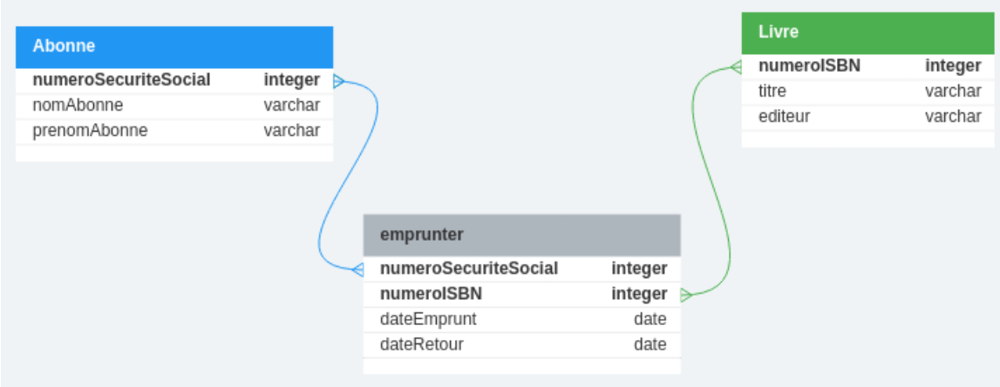
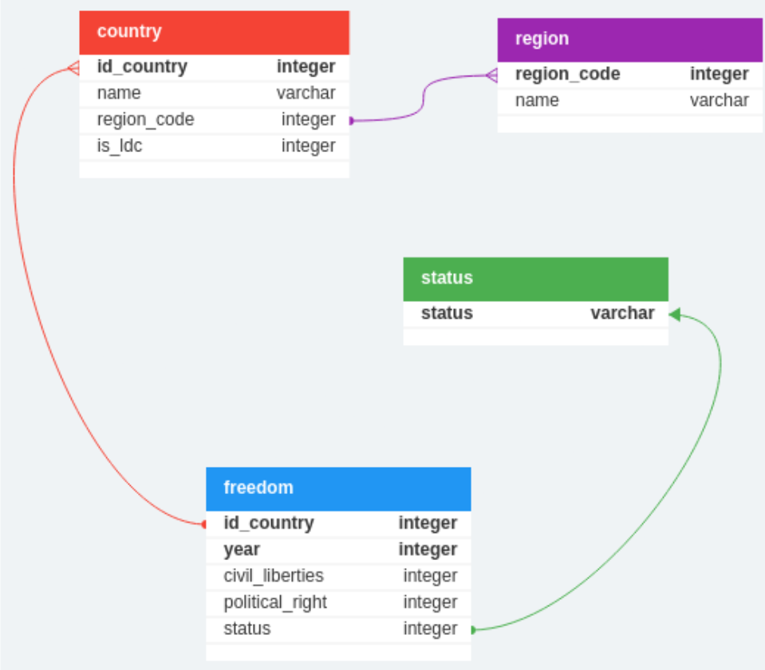
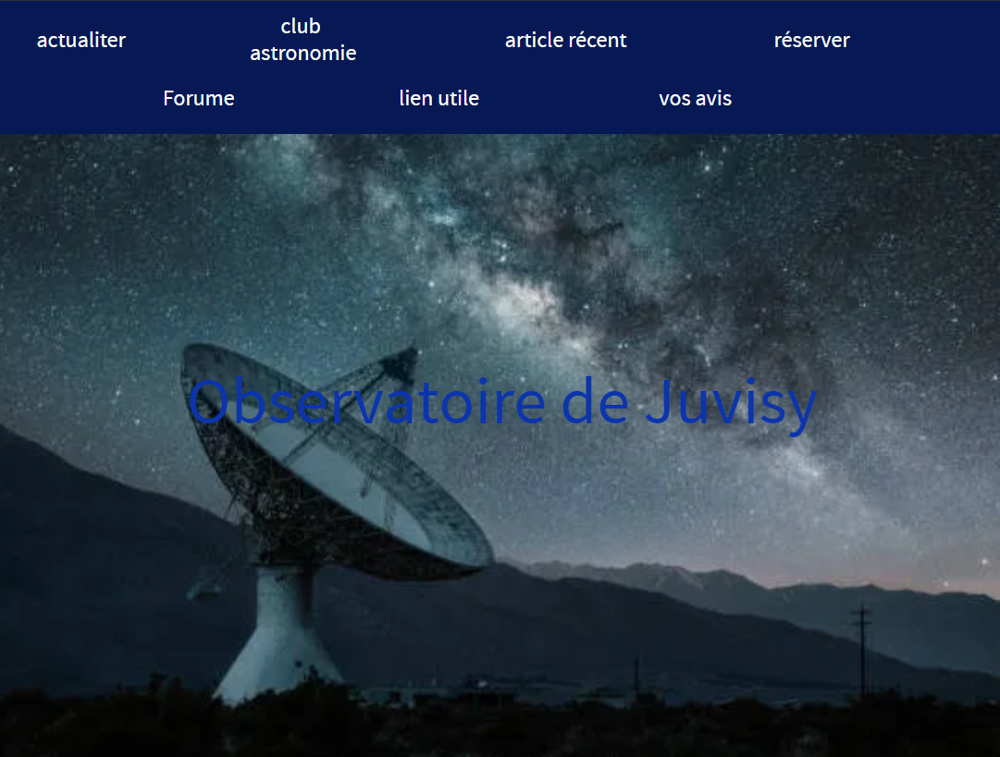
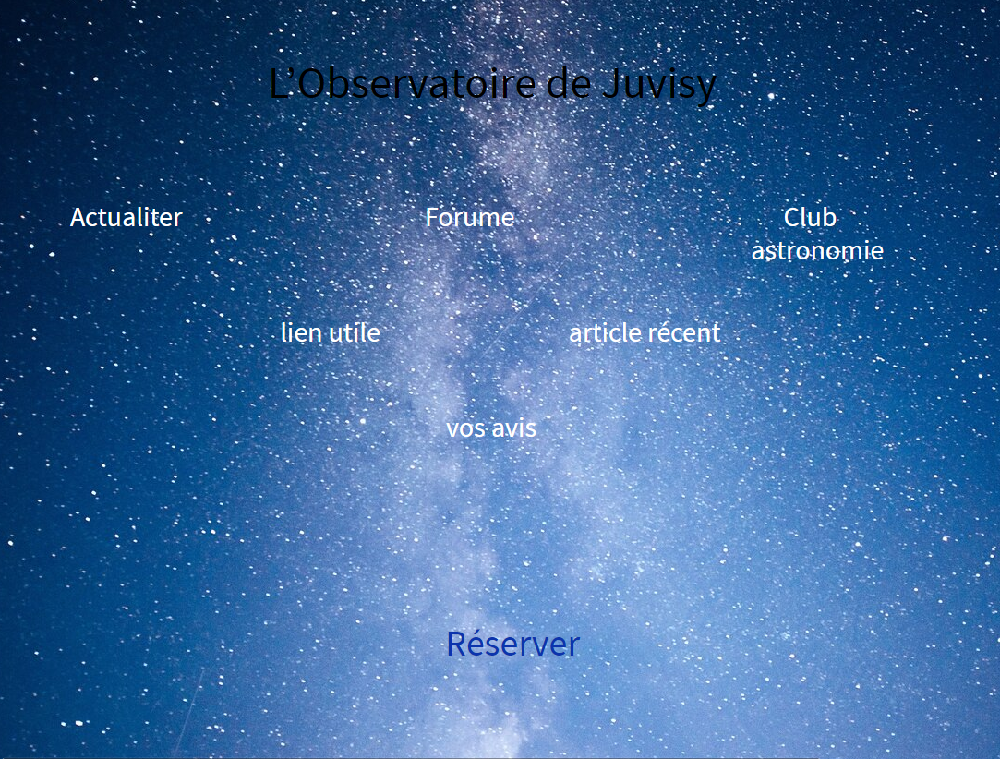
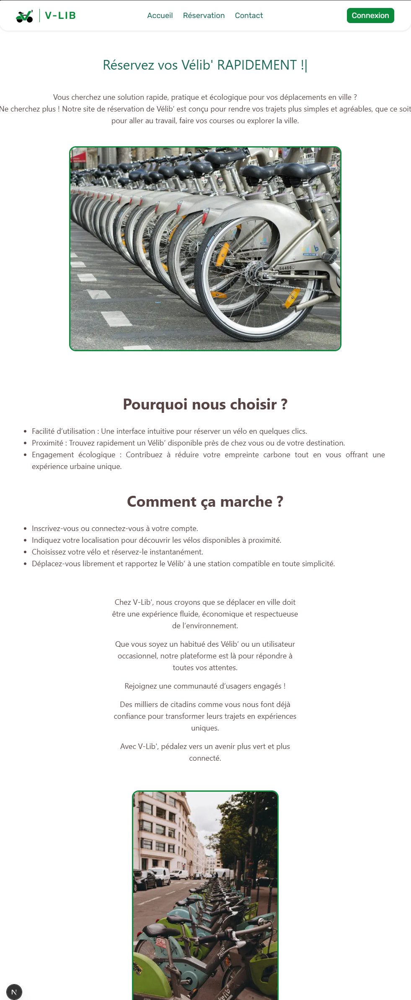
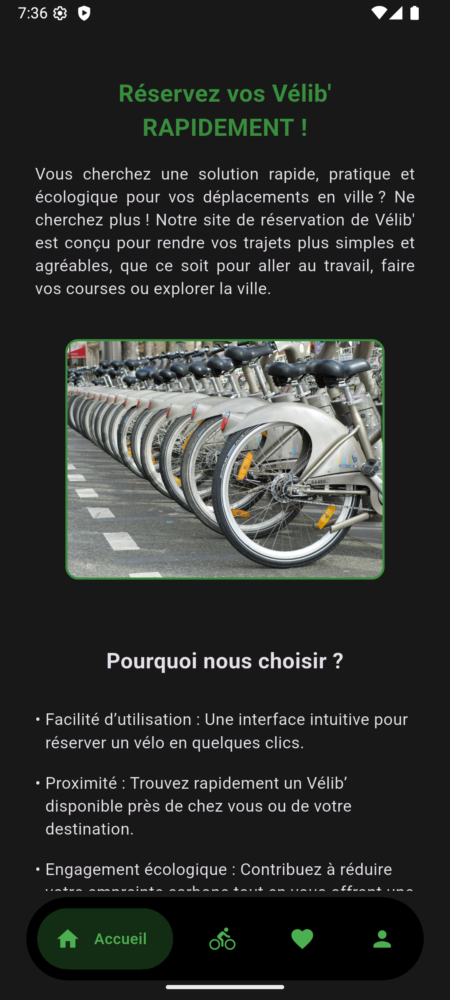
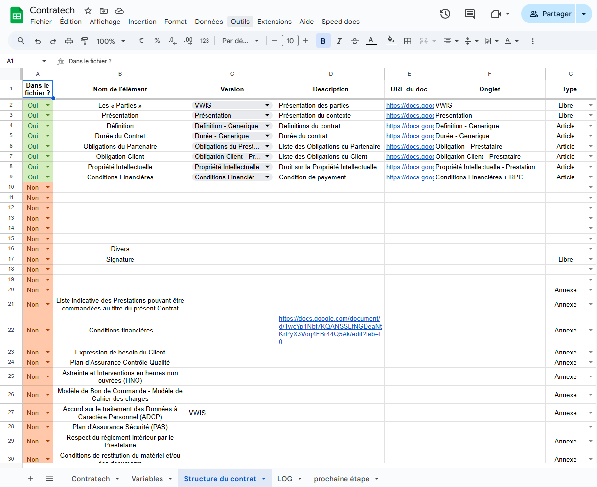

1. Qui suis-je ?
Mon BUT
Étudiant en deuxième année de BUT Informatique,
j'ai pu découvrir ce domaine et comprendre les
enjeux qui l'entourent.
Alors que lors de ma première année, j'ai
principalement étudié les bases de la
programmation, des systèmes informatiques
et des outils numériques, l'objectif était
de nous donner une vue d'ensemble de l'informatique
et de nous apprendre la logique qui se cache
derrière le monde du développement.
En deuxième année, le développement est
abordé de manière plus concrète et opérationnelle.
Au lieu d'apprendre la logique d'un langage, on
apprend à la mettre en pratique dans un projet.
J'ai également appris les bonnes pratiques lors
d'un développement, pour rendre le tout plus
cohérent, compréhensible et nous faire prendre
conscience de tous les points essentiels pour
le bon déroulement d'un projet.
Durant cette année, j'ai également effectué un
stage dans le domaine du développement web, ce
qui m'a conforté dans l'idée que j'avais trouvé
ma voie.
Mes ambitions
Mon objectif est de terminer mon BUT informatique, puis de poursuivre avec un diplôme d'ingénieur en informatique ou en réseaux, ce qui me permettrait d'atteindre le niveau bac +5. Ces diplômes me permettront ensuite d'exercer le métier de développeur ou d'ingénieur en réseaux. Une fois dans le monde professionnel, j'aimerais évoluer au sein de différentes entreprises afin de découvrir différents cadres, philosophies, mais aussi progresser sur les plans professionnel et hiérarchique grâce à cette expérience.
2. Bilan de mes compétences et projets
Mes projets universsitaire
Installation de services réseau
Dans le cadre d'un projet
universitaire, j'ai pu installer un
système de services réseau relié à
une base de données, sur une
machine virtuelle. Pour cela j'ai
émulé une machine virtuelle sur un
disque dur, via le logiciel Oracle
VM VirtualBox. J'y ai ensuite installé
MariaDB, pour gérer la base de
données. Ainsi que le service
apache2, pour faire de ma machine
un serveur. Et pour terminer j'ai
utilisé le langage PHP, pour faire
communiquer les deux services.
Ce projet ma appris à:
- Crée une machine virtuelle, la booter, et la faire fonctionner sur différents matériels.
- Configurer un environnement de développement, avec différents outils et les interconnecter.
- Crée des scripts pour la lecture d'informations, leur traitement et les renvoyer à l'utilisateur.
Organisation d'un travail d'équipe
Lors de ce projet, nous avons dû, avec mon équipe, visiter un musée et noter les parties intéressantes ou qui nous ont marqués.
Mais aussi effectuer une interview d'une personne présente à l'exposition, pour avoir son ressenti.
Puis développer un site pour présenter l'exposition, et imaginer ce qu'elle présentera l'année suivante.
Moi et deux de mes camarades étions chargés de développer le site web.
Lors de ce projet, j'ai pu développer mes compétences en:
- Dans les langages web basiques tels que le HTML, CSS et JavaScript, pour créer une page web fonctionnelle, agréable à utiliser et responsive.
- Communication et mes facultés à travailler en équipe, car il fallait organiser les différentes tâches, se les répartir et informer les autres de l'avancement du projet.
Création BD
Pour ce projet, j'ai dû utiliser l'outil
PostgreSQL pour paramétrer une
base de données. J'ai dû faire un
modèle relationnel, pour décider à
quoi allaient ressembler ces
tables et comment elles allaient
communiquer entre elles. Puis j'ai
écrit un script pour que ces tables
se créent de façon automatique.
Et pour finir j'ai demandé à un
logiciel spécialisé d'écrire sa
propre version du script, pour la
comparer à la mienne.
Ce projet m'a permis de développer mes compétences en:
- Modélisation d'entité relationnelle, et en définition de base de données.
- Réalisation de script de génération de base de données.
- Mais j'ai aussi découvert des outils professionnels pour générer ses bases de données.
Des model entite association de mon projet:


Recueil de besoins
Dans ce projet, j'ai dû endosser deux
rôles, ce lui de client, et celui de
développeur.
Dans mon rôle de client, j'étais un
patron de bar, qui souhaitait un
nouveau site. J'ai dû définir des
besoins, donner mes attentes
fonctionnelles et graphiques pour le
site et faire des retours sur les
propositions. Puis, dans le rôle de
développeur, j'ai dû faire un site
pour un observatoire qui souhaitait
accéder à un public plus jeune. J'ai
dû étudier le cahier des charges,
répondre aux attentes des clients et
prendre en compte les retours faits.
Ce projet m’a permis de travailler mes compétences en communication.
Tout au long de ce projet, j'ai dû apprendre à m'exprimer pour définir des besoins de manière claire, pour exprimer mes attentes, mais aussi pour faire des retours constructifs et pertinents.
Mais j'ai aussi dû apprendre à écouter, mon client pour prendre en compte ses besoins, comprendre ses attentes et écouter son avis et les différents retours qu'il me faisait.
Les maquette du site:


Développement d'une application
L'objectif de ce projet était de mettre
en pratique l'ensemble des connaissances
acquises lors de nos cours. À cette fin,
nous avons créé une application web
complète, aussi bien pour le back-end
que pour le front-end. Nous avons créé
une base de données MySQL que nous
interrogeons avec une API Python utilisant
la bibliothèque Django, et nous gérons
notre front-end avec NextJS.
Une fois l'application web opérationnelle,
nos professeurs nous ont demandé de
reprendre le développement du back-end
afin de créer une application mobile. Pour
développer cette application, nous avons
utilisé Flutter. Une fois le projet
terminé, nous disposions d'une
application web et mobile opérationnelle
permettant de toucher le plus d'utilisateurs
possible.
Ce projet m’a permis de faire un bilan de mes compétences, car il a fallu que j'utilise toutes les compétences que j'avais développées pendant mes deux premières années de BUT.
Nous avons créé une application web, que nous avons ensuite convertie en application mobile, et nous avons même dû conteneuriser notre back-end.
Et finalement, nous avons dû communiquer. Tout au long de ce projet, nous avons dû échanger via des réunions, pour faire des points sur l'avancée du projet et les différentes tâches restantes.


Les compétence aquise
Ses projets m'ont permis de
progresser et de mettre en pratique mes
compétences dans un contexte précis et pertinent.
J'ai ainsi pu apprendre à développer, à
optimiser et à déployer des applications
web et mobiles. Pour chacun de ces projets,
j'ai dû mettre en place des environnements
de développement et gérer les systèmes de
données correspondants. J'ai dû m'organiser
avec mon équipe pour définir les rôles de
chacun et organiser les différentes tâches.
Toutes ces expériences m'ont permis de
comprendre le fonctionnement réel d'un
projet informatique et de me préparer
aux missions de mon stage.
3. Mon experience professionnelle
premier pas
Lors de ma deuxième année de BUT, j'ai
effectué un stage de huit semaines.
Je l'ai effectué au sein de la DSI de
Veolia Eau France. Durant celui-ci,
j'ai découvert un nouvel environnement
et une nouvelle façon de penser. À mon
arrivée dans l'entreprise, mon maître
de stage m'a accueilli et m'a fait
visiter les locaux, ainsi que les bureaux
et les salles de réunion. Il m'a ensuite
présenté le déroulement de mon stage
ainsi que les attentes de l'entreprise.
La façon de travailler était très
déroutante pour moi, car les journées
n'étaient pas rythmées par des horaires,
mais par des objectifs, ce qui était très
instable au début. Mais j'ai vite adopté
ce rythme, ainsi que les avantages qui
l'accompagnent.
Une experience enrichissante
Au cours de ce stage, j'ai pu découvrir plusieurs particularités du monde du travail. L'une des premières est qu'il faut anticiper grandement les interactions avec les autres services. Lors de mon arrivée dans l'entreprise, j'ai ouvert un ticket auprès du support pour obtenir mon matériel de développement, et il a fallu une semaine entre le moment où j'ai ouvert le ticket et le moment où j'ai pu commencer à développer. Mais cela m'a aussi appris qu'il est toujours possible d'avancer, car pendant toute cette période d'attente, j'ai pu travailler sur d'autres choses, comme la planification du travail ou la lecture de documentation, ce qui m'a permis d'être opérationnelle immédiatement pour le développement.
Le travail d'équipe
Dans le cadre de ce projet, j'ai dû travailler en équipe et coordonner mes efforts avec mes différents collègues. Pour me familiariser avec l'équipe, mon responsable a organisé une réunion d'information. Pour assurer le suivi de mon travail et recevoir des conseils, j'ai organisé des réunions hebdomadaires avec lui, au cours desquelles je lui présentais mon travail et il me faisait part de ses retours sur les améliorations à apporter et les prochaines tâches. J'ai ainsi pu rester en phase avec mes collègues et contribuer à un travail collaboratif. Toutes ces dispositions ont été utiles lors de cette immersion professionnelle et m'ont permis de comprendre le fonctionnement d'une équipe en entreprise.
4. Mes projets personnels
La nuit de l'info
Les 5 et 6 décembre 2024, de 16 h 39 à 8 h 4,
j'ai participé à l'événement La Nuit de l'Info.
La Nuit de l’Info est une compétition nationale
qui réunit étudiants, enseignants et entreprises
pour qu'ils travaillent ensemble sur le développement
d’une application web pendant une nuit. Lors de cet
événement, j'ai pu travailler sur la création d'un
site web pour l'association
Race for Water Fondation.
Ce site avait pour but de présenter différents organismes marins.
Il comparait l'océan au corps humain pour mettre en évidence
leur utilité.
J'ai pu mettre en pratique mes compétences en
développement web, ainsi que ma capacité à travailler
en équipe et dans le respect de délais serrés.
Générateur de contrat
Dans un cadre personnel, j'ai développé un
outil de création de contrats. Cet outil
utilise la suite de bureau de Google, plus
précisément Google Sheets et Docs, ainsi
que AppScript, un langage destiné à développer
de nouvelles fonctionnalités et qui est un
dérivé de JavaScript.
Pour fonctionner, l'outil prend pour entrée
des morceaux de contrat pré-générés, ainsi
que des noms de variables à modifier (nom
des contractants, durée du contrat, etc.),
puis génère à partir de ces informations un
contrat opérationnel sous la forme d'un
document Google Docs.
La page de configuration sheet:
